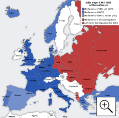

Berlinmuren uppfördes 1961 av Östtyskland (DDR) för att stoppa massflykten till Västberlin. Muren blev en symbol för Europas delning under kalla kriget.
Bild: Dan Budnik
Det kalla kriget var en konflikt mellan å ena sidan USA och stora delar av västvärlden, och å andra sidan Sovjetunionen och deras allierade i främst Östeuropa. Konflikten pågick mellan åren 1945 och 1991 och kan betecknas som ett vilande krig där krigshotet alltid var närvarande men aldrig ledde till ett regelrätt krig mellan de båda sidorna. Däremot stred de båda maktblocken militärt indirekt mot varandra genom ombud och marionetter i form av t.ex. andra stater och gerillarörelser som gavs ekonomiskt och militärt stöd. Det kalla kriget var också ett propagandakrig där parterna strävade efter att överglänsa varandra och förhärliga sina egna ideologiska system samtidigt som de svartmålade motståndarens. Detta framgick tydligt inom bl.a. idrottsvärlden och då främst i samband med OS.
Berlinmuren uppfördes 1961 av Östtyskland (DDR) för att stoppa massflykten till Västberlin. Muren blev en symbol för Europas delning under kalla kriget.
Bild: Dan Budnik
Kalla krigets drivkraft låg i stormakternas ideologiska olikheter - USA och västvärlden stod för en marknadsliberal ekonomi och ett demokratiskt samhällssystem, medan Sovjetunionen höll fast vid en statligt styrd planekonomi och diktatur. De stora skillnaderna inom de politiska och ekonomiska områdena framgick tydligt när de allierade stormakterna möttes under konferenserna i Jalta och Potsdam 1945 för att planera för Europas framtid efter andra världskriget. I samband med de båda mötena kom motsättningarna mellan stormakterna upp till ytan. Det var under de här båda politiska toppmötena som det kalla kriget inleddes.
Ett ekonomiskt system där produktionsmedlen befinner sig i statlig ägo och där staten styr ekonomin med hjälp av ekonomiska planer. Kommunistpartiet i Sovjetunionen använde femårsplaner. Här framgick vad som skulle produceras inom vissa brancher och hur mycket som fick tillverkas. Femårsplanerna gick inte att ändra. Det dynamiska samspelet mellan "tillgång och efterfrågan" var inte intressant i en femårsplan eftersom kommunistpartiet ansåg sig veta vad folket och näringslivet behövde.
Det finns flera teorier om orsakerna bakom det kalla kriget. I den äldre historieforskningen har historiker på respektive sida ofta anklagat den andra parten för att ha orsakat konflikten. Modern historieforskning framhåller däremot att konflikten var alldeles för komplicerad för att vara frammanad av någon enskild sida. Istället pekar man idag på de ideologiska skillnaderna mellan de båda parternas samhällssystem som gjorde att en konflikt blev oundviklig i längden.
Efter andra världskriget växte USA fram som världens mäktigaste stat - både militärt och ekonomiskt. Men Sovjetunionen hade skaffat sig en stark militär position i Central- och Östeuropa och var fast besluten att befästa och stärka den. Åren efter krigsslutet skärptes därför motsättningarna mellan stormakterna. I de delarna av Central- och Östeuropa som Sovjetunionen tidigare hade ”befriat” från den tyska ockupationsmakten, installerades nu kommunistiska regimer. Kommunismen betraktades därefter som ett allvarligt direkt hot mot de västeuropeiska ländernas nyvunna demokratiska frihet. Tvärs igenom Europa där de båda stormakternas intressen kolliderade började nu en "järnridå" växa fram - en osynlig mental och ideologisk gränsdragning som skiljde öst från väst (se kartan nedan).
Kalla krigets militära allianser i Europa.
Bild: San Jose
För att kunna möta det uppkomna kommunistiska hotet i Europa svarade USA med att skapa den s.k. Trumandoktrinen som i grunden var en handlingslinje som syftade till att hjälpa utländska regeringar som hotades av kommunismen. Trumandoktrinen innebar en omsvängning av USA:s utrikespolitik i världen. Från att tidigare ha haft begränsade utrikespolitiska intressen, blev USA nu en aktiv och mäktig aktör på den storpolitiska internationella arenan. I USA:s nya handlingslinje ingick den s.k. Marshallplanen som var ett ekonomiskt lån- och biståndsprogram som skulle användas till att återuppbygga det krigshärjade Europa. USA:s nya målsättning gick i stora drag ut på att skapa ekonomisk och politisk stabilitet i syfte att inlemma Västeuropa i den marknadsekonomiska och kapitalistiska sfären och därmed samtidigt stödja demokratin. En brännpunkt mellan stormakterna var Tyskland, speciellt Berlin som vid krigsslutet hade delats i två halvor - Västberlin som kontrollerades av västmakterna och Östberlin som kontrollerades av Sovjetunionen.
Källa: http://www.so-rummet.se/kategorier/historia/det-korta-1900-talet/kalla-kriget
En grupp närbesläktade idéer om
att produktionsmedlen i ett samhälle
bör vara gemensamt ägda.